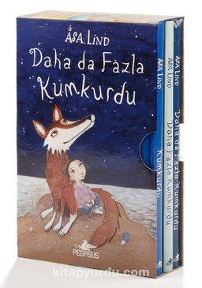

Çocuk Kitapları
Kiraz Ağacı ile Aramızdaki Mesafe
Kumkurdu Serisi Seti

Şu Yaramaz Tavşanlar
.jpg)
Koca Ayı tek başına yaşıyordu. Issız kırların ortasındaki evinde. Yalnızlıktan hiç sıkılmıyordu. Onun sevdiği hayat buydu işte. Bir gün kalabalık bir tavşan ailesinin hemen yanı başına taşındığını görünce asabının ne kadar bozulduğunu tahmin edersin.
.jpg)
Yazarın kendi yaşam hikâyesinden esinlenerek, küçük bir kızın görme yetisini kaybetmesiyle ilgili kaleme alınmış olan bu roman her yaştan okur için. Küçük Prens, İçimdeki Müzik gibi kitapların hayranları için çok özel bir yeri olacak… Mafalda, dokuz yaşındaki bir kız çocuğu ve bildiği bir şey var: Gelecek altı ay içinde, görme yetisini tamamen kaybedecek. Mafalda, görünürdeki bu karanlık gelecekte yolunu bulabilecek, okula gidebilecek, futbol oynayabilecek ve kedisine bakabilecek mi?
“Evren her şeydir,” dedi Kumkurdu. “Var olan her şey! Burada ve şimdi, o zaman ve orada. Aydınlık ve karanlık, galaksiler ve yıldızlar, gezegenler, kuyrukluyıldızlar, trampetler ve kartallar ve ayılar ve bazen, bir pantolonun cebinde duran tozlu, kırmızı şekerlemeler.” “Benim biraz önce yuttuğumdan mı?” diye sordu Zackarina. “O da mı evrenin bir parçasıydı?” “Elbette!” dedi Kumkurdu. “O da evrenin bir parçasıydı. Sen de Zackarina, sen de evrenin bir parçasısın.”